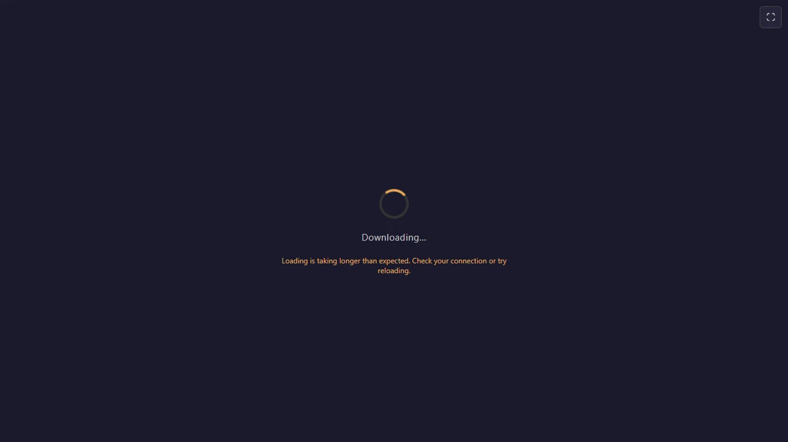
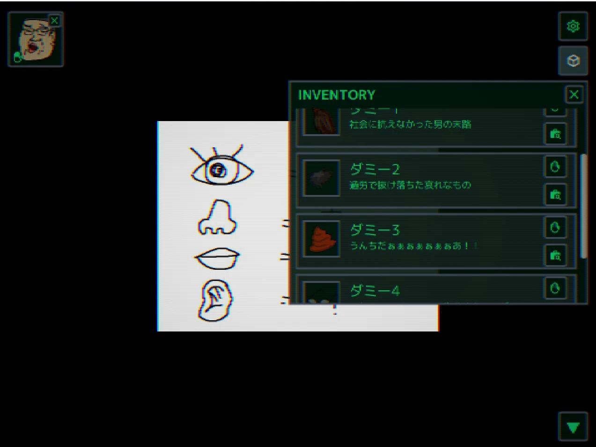

Portfolio
※一部の作品はチーム制作したもので、チームメンバーから許諾を得ていないため、遊べないものもあります。
Featured
自作の MitiruEngine 上で動かしているゲーム。ハトを育てようはリメイクとして完成、かえるクレープは Godot 版から移植中です。

ハトを育てよう（MitiruEngine リメイク）
2023 年に TyranoScript で書いた原作を、自作の MitiruEngine 上で完全移植 + 追加要素を入れたリメイク版。バックログ、既読管理、セーブロードまで実装。MitiruEngine が「実際にゲームを出せる道具」であることの実証作品でもあります。
詳細を見る →
かえるクレープへようこそ
クレープを作りながらヒロインたちと親睦を深める恋愛クッキングゲーム。1950 年代アメリカのモーニング・ダイナーが舞台で、12 日間のキャンペーン。Godot 版を経て、現在は自作の MitiruEngine 上で 1.0.0-rc1 まで作り込み中。Playwright による E2E テスト、テーマトークン、itch 配布まで足場が整っています。
詳細を見る →Other Games
学部時代から書いてきた個人・チーム制作。プロジェクトリーダーとして関わったものを含みます。

Down into...
怪物から逃げながら塔の脱出を目指す倉庫番系パズル。C++とSiv3Dを使った初めてのチーム開発作品。会津大学・蒼翔祭2022、コミックマーケット101にて無料頒布。
ハトを育てよう（原作版）
ハトを育てるマルチエンディング育成ゲーム。TyranoScript で書いた原作版。蒼翔祭 2023 にて展示。この作品は後に MitiruEngine でリメイクされています。
ダウンロード →
416
たくさんの迫りくる化け物を倒すヴァンサバ風ローグライク。初めてのプロジェクトリーダー経験。蒼翔祭2023、コミックマーケット103にて無料頒布。

ぐるぐる☆しゅがーふぁくとりー
落ちてくる飴玉を回転するドーナツを使ってくっつける落ちものパズル。初めてのUnity開発。蒼翔祭2024にて展示。

VoronoiShortestPathSolver
ボロノイ図を用いた最短経路探索シミュレーション。ビジュアルコンピューティングのための幾何学という授業で得た知見をもとに作成。点（母点）がいくつか与えられたとき、どの点に一番近いかによって平面を分割したものをボロノイ図といい、それを用いて最短経路を探索する試み。
GitHub →
劇場版ぱんドドド―ド
キャラクターを育成して、アクションに挑む新感覚おばか育成アクション。プロジェクトリーダーとしてチームメンバーのサポートをしながら開発。Unityのようなコンポーネントシステムを参考に設計し、ステージ制作ツールを別途作成。モンスターに支配された会津大学を企画開発部のマスコットキャラクター「ぱんどど」を育成し、モンスター退治をするというストーリー。

Vimove
Vimの操作方法でクリアを目指す迷路ゲーム。Vimの上下左右移動（h, j, k, l）で迷路をクリアするゲーム。Vimの操作感に慣れるために作成。あらかじめ用意した数十ステージと、全ステージクリア後に開放されるエンドレスモード（ランダムで迷路を生成）で遊べる。
ダウンロード →
GraphWalker
数式を打ち込んでグラフを作成し、ゴールを目指すパズルアクション。Siv3Dの数式パース機能を利用して、当たり判定のあるグラフを作成し、ゴールを目指す。数学が苦手な後輩を見て発案。グラフをもっと身近なものにしようという意図でアクションゲームにした。
GitHub →oskar-rythm
オスカー × ガーデニング × リズム天国型のタイミングゲーム。種まき（お手本）→ 水やり（プレイヤー操作）→ リザルトの 3 フェーズ構成。リズム判定は Web Audio API の AudioContext.currentTime 基準。MitiruEngine の web-first CEF shell パターンの実装例。

🚪脱出ゲーム（仮）
ループするサークル部室から脱出を目指すミステリーゲーム。シェーダーでゲーム画面を CRT モニター風に演出している。見た目、ゲームシステム、シナリオにこだわった作品を目指し、制作中。会津大学・蒼翔祭2026 にて展示予定。